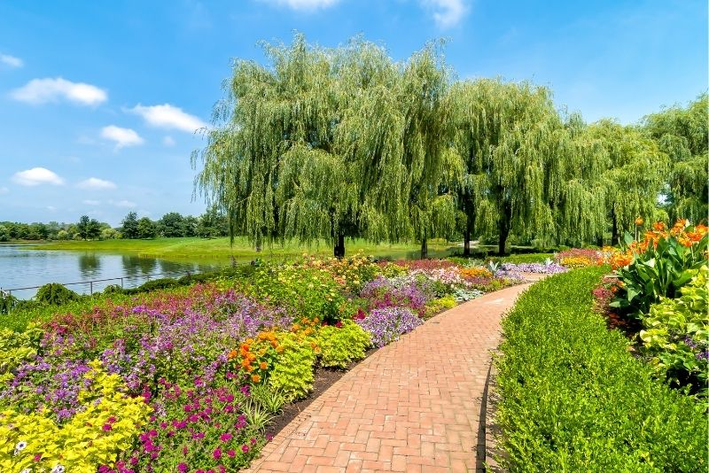

The Chicago Botanic Garden is a 385-acre living plant museum situated on nine islands in the Cook County Forest Preserves. It features 27 display gardens and five natural habitats including Mary Mix McDonald Woods, Barbara Brown Nature Reserve, Dixon Prairie, the Skokie River Corridor, and the Lakes and Shorelines.
